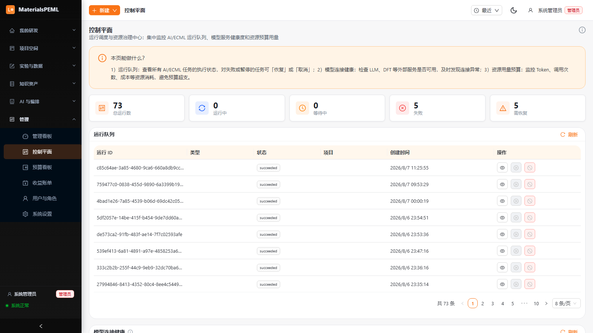

AI MATERIALS R&D · MATERIALSPEML
AI 新材料研发闭环系统
让每一次实验都算数
候选生成、性质预测、合成设计、湿实验验证——串成一条会自己变聪明的研发流水线
MaterialsPEML · 杭州且言管理咨询有限公司
创始人【姓名】· 前西门子 Opcenter RD&L 中国区产品管理（九年）
2026.8
开场先问：上个月你们失败的那些实验，结论现在在哪？在谁的电脑里？还找得到吗？今天讲的就是这件事——怎么让每一次实验的结果，都变成下一次实验的输入。创始人九年西门子 RD&L 经历，是全篇唯一无法复制的信任资产。
CONTENT · 今天大约 20 分钟，讲五件事，欢迎随时打断
五个问题，讲完这一场
"随时打断"四个字很重要——敢让客户打断，本身就是自信。今天五件事：为什么慢、我们的答案、系统长什么样、值多少钱、凭什么信我们。
01
01 · 为什么研发还是慢
先从一个画面说起
一个候选材料，从被提出到真正进实验室，要走多少弯路。
章节页不要念标题，直接用画面开场。大家想想自己团队里，一个候选从提出到进实验室，中间到底要搬多少趟数据。
CHALLENGE · 01
工具越来越多，研发为什么还是慢？
一个研发工程师典型的一天
上午
在三个软件之间搬数据、转格式
数据从上一个环节来到下一个环节，靠的是人肉搬运和一遍遍转格式。
下午
等仿真、对结果、问同事要数据
等仿真跑完、对不上结果、写邮件找上周的实验记录，半天就过去了。
下班前
把结果誊进 Excel，发进群文件
结论誊进 Excel，发进群文件。明天，又是同样的循环。
模型比五年前强了很多，但人还是那个人肉接口。
我们的判断：瓶颈不在单点工具，在工具之间的断点上。
这页不用念。问台下：你们团队里有没有人每天就是干这个的？通常大家都会笑。笑完补一句：模型年年升级，研发流程十年没变。
CHALLENGE · 02
研发卡住的地方，不是工具，是工具之间
四类损耗，每一类都能在你们团队里对上号
效率
效率损耗
一个候选从提出到验证往返【X】轮，真正做实验的时间不到一半，其余都在等、在搬数据
知识
知识流失
项目结项那天，"为什么选这个配方"只存在于【某位离职同事】的脑子里
协作
协作断层
新同事接手的第一件事，是花两周读懂前任留下的脚本
治理
治理缺口
IT 只问三个问题——数据存哪、谁能看、出事谁负责。个人工具一个都答不上来
四个场景至少有一个会让台下点头。讲到那个的时候停一拍。这四个问题，换再强的模型也解决不了。
02
02 · 我们的答案
只有一句话
把断点接上，让数据自己流起来。
第二章就一句话。不卖概念，直接给答案。
ANSWER · 02
让每一次实验的结果，自己流回下一轮
一条闭环：提出候选 → 计算验证 → 合成设计 → 实验验证 → 复盘沉淀
闭环每转一圈：周期短一点，试错少一点，知识留下一点。
拿一个真实候选走一遍：比如一个固态电解质，从检索到进湿实验，在我们系统里就是这样一圈一圈转的。
拿一个真实候选走一遍图：比如一个固态电解质候选，从检索到进湿实验。讲具体的，不要讲概念。
ANSWER · 02
同一个候选，两种走法
画面比文字有说服力：左边是普遍现状，右边是闭环里的走法
今天普遍的走法
换工具 · 搬数据 · 专家当胶水
闭环里的走法
一个入口 · 数据流转 · 结论回流
问台下：左边这个场景眼熟吗？左边是真实截图（数据脱敏），右边是系统里的实验闭环迭代界面。
03
03 · 系统长什么样
先看它是不是真的在跑
框架讲完了。接下来只看一件事：它是不是真的在跑。
从这页开始，少讲概念，多给证据。
CAPABILITY · 03
一条闭环，六个环节——都在一个系统里
每个环节右上角如实标注状态，不藏不掖
性质预测
已跑通CGCNN / M3GNet / 高分子 GNN
实验闭环
已跑通任务单 → 审批 → 湿实验 → QC
这不是六个产品拼在一起，是同一批数据在六个环节里流转。
主动说出哪个环节还在打磨。客户早晚会发现，不如自己先说——先说的人掌握解释权。
CAPABILITY · 03
每个环节，接的都是经过验证的科学工具
这些模型和工具都是学界、业界验证过的。我们不重复造轮子，功夫花在把它们编排成一条线。
1
候选生成
材料库检索（MP）+ 材料发现（GNoME）+ 晶体元素替换 + 高分子规则重组
2
性质预测
晶体用 CGCNN/M3GNet，高分子用图神经网络与 polyBERT 指纹，覆盖 5 大类 54 项属性
3
筛选优化
ECML 循环调度 + Top-K 评分 + 委员会评审，选出下一轮实验
4
合成设计
ASKCOS 逆合成规划多步路径，SMARTS 反应规则检查前置
5
实验闭环
任务单状态机 → 审批 → 湿执行 → 数据归一化 → QC 审计，全程可追溯
6
决策沉淀
Release Card 放行卡 + 收益账单（已验证 / 预估区分）+ 知识资产
这页是写给台下技术专家看的。这些名字他们认得出来，认出来，信任就开始了。
这页是写给技术专家看的。CGCNN、M3GNet、polyBERT、MP、GNoME、ASKCOS 都是真实经过验证的工具，我们不重复造轮子。合成设计仅列 SMARTS 反应规则检查，不夸大 REACH。
CAPABILITY · PRODUCT
一个真实在跑的系统，不是概念演示
统一研发入口：目标 → 计划 → 执行；管理看板：资源、成本、风险一屏掌握
现在就可以打开系统，现场跑一个候选给各位看。
演示比截图有说服力十倍。主动提现场演示——敢演示，本身就是信任。脚标已改为"真实系统截图，数据已脱敏"。
CAPABILITY · AI TRANSPARENCY
AI 做的每一步，你看得见、查得到、能否决
说透明不如展示透明——一张真实的推理链截图，顶一千句承诺
1
哪个 Agent 在做
每个环节明确显示调用了哪个 Agent / 工具及其简介，不做黑盒
2
推理过程可展开
AI 的推理理由、证据与依据可展开查看，不是只给结论
3
结论可人工覆盖
运行队列 + 失败可恢复 + 全程留痕；专家不签字，AI 的结论就是废纸
AI 推理链 · 实时界面

研发专家不签字，AI 的结论就是废纸，系统就是按这个原则设计的。右侧是控制平面的真实界面，运行队列、失败可恢复、全程留痕。
04
04 · 值多少钱，凭什么选我们
回答两个最实际的问题
接下来回答两个最实际的问题。
第四章回答客户最实际的两个问题：值多少钱、凭什么选我们。
VALUE · 04
这套系统值多少钱？算一笔账给你看
一个候选从提出到验证，传统做法要【X】轮往返、【Y】周
AI 预筛
先砍掉明显不行的候选，无效实验大幅减少
→ 减少无效湿实验
委员会评审
评审委员会再筛一轮，只留最值得做的几个
→ 只进最值得的
收益认证
已验证 / 预估严格区分，不注水
→ 审计可查
我们在电池材料上的实测
【往返次数 / 周期 / 实验数变化——放真实数据，宁可保守】
这页的数字必须是真的，宁可保守。客户会拿这页去跟老板要钱——数字被戳穿，单子就没了。知识沉淀不进 ROI 公式，但项目结束那天，你会第一次留下一份完整的"当时为什么这么做"。
EDGE · 04
我们强在哪，弱在哪，一页说清
主动说清强弱，客户心里本来就有这些疑问，你先说，他就没法拿这个攻击你
| 维度 | 单点工具 | 纯计算平台 | 我们（闭环平台） |
|---|
| 覆盖环节 | 单任务 | 计算为主 | 生成—筛选—预测—合成—实验—沉淀 |
| 湿实验衔接 | 无 | 部分 | 任务单 → 审批 → 湿执行 → QC 全链路 |
| 数据回流 | 无 | 有限 | 实验结论回流修正候选 |
| 决策沉淀 | 无 | 弱 | 放行卡 + 知识资产 + 收益证明 |
我们认的短板 · 品牌与规模
初创公司，团队【X】人。据我们所知，同时打通生成、实验和数据沉淀的还很少。如果有同行做到了，欢迎交流。
我们认的短板 · 行业覆盖
只做新材料，别的不做。别的行业我们不做，也不打算做。
我们只在"新材料研发闭环"这一件事上有信心做到最好。其他维度不如大厂的，我们主动认。"无人同时打通"改为"据我们所知还很少，欢迎交流"。
EDGE · 04 · ECOSYSTEM
为什么我们最懂 RD&L 用户的痛
创始人在西门子做了九年 Opcenter RD&L 产品管理，跑过中国区几十家材料与配方企业
创始人
九年 RD&L 产品管理
【姓名】· 前西门子 Opcenter RD&L 中国区产品管理
同一个画面反复出现
RD&L 把配方和实验数据管得井井有条，但"下一个实验做什么"，还是靠专家拍脑袋。
这套系统就是补这一层的——RD&L 继续做企业主数据和合规底座，我们把 AI 研发闭环接上去，双向打通。已经在用 RD&L 的客户，什么都不用换。
这页讲自己的经历，不要念稿。最好举一个当年亲眼见过的客户例子（脱敏）。台下如果有 RD&L 老用户，这页是他们放下手机的一页。
ROADMAP · 04
从已验证的电池材料，扩展到更广的新材料研发
为什么先做电池材料——它是新材料里最难的场景之一，数据基础最好，也是我们最熟的领域
电池材料（已验证）
固态电解质 / 正负极 / 聚合物电解质，闭环已跑通
已跑通
聚合物 / 催化剂
复用同一套生成—预测—实验闭环，适配对应表示与模型
扩展
日化配方 / 电子化学品
叠加行业包与客户定制，形成垂直 Playbook
规划
敢承认"还没做到"，"已做到"的才有人信。三个阶段的标注是诚实的：已跑通 / 扩展 / 规划。
05
05 · 凭什么相信一家初创公司
不打算用口号回答
我们不打算用口号回答。接下来几页，全是证据。
第五章回答客户第二个疑问：凭什么信一家初创公司。答案不是口号，是证据。
TRUST · 05
我们是谁
初创公司向客户要信任，"谁在做这件事"和"做什么"同样重要
创始人
创始人
创始人【姓名】
西门子 Opcenter RD&L 九年 · 中国区产品管理 · 服务过几十家材料与配方企业
团队
团队
团队【X】人
材料信息学 / 软件工程 / 湿实验，三类背景互补
一句实话我们是初创公司，人不多，但这件事我们想了很久，也只做了这一件事。
这是全篇唯一的"人"的画面。信任最终落在人身上。创始人九年 RD&L 经历，是唯一无法被复制的东西。
GOVERNANCE · 05
企业敢把核心数据放进来，是因为这四道闸
讲给 IT 和管理层听：研发关心好不好用，他们关心出不出事
1
数据不出你的边界
私有化部署 + 数据隔离 + 角色权限，你的配方只有你能看
2
每个决策有人负责
AI 给建议，人做放行。放行卡记录谁点的头、依据是什么
3
AI 行为有缰绳
预算超限自动停、工具调用走网关、全程留日志
四道闸：数据不出边界、每个决策有人负责、AI 行为有缰绳、收益不注水。这页讲给 IT 和管理层听。
TRUST IN NUMBERS · 05
这些数字，欢迎各位现场复测
敢讲失败过的公司，数字才有人信
0% → 0/23
科学正确性
第一次专业测评只拿了 87%，修完才到 23/23
对 DIPPR / NIST 等文献标准值全部通过复测（文献验证）
以上数字均可现场复测，欢迎带你们的测试集来。
87% 的故事一定要亲口讲，讲出当时的细节。敢讲失败过的公司，数字才有人信。每个数字保留来源标注：文献验证 / 演示环境 / 系统注册。
THANK YOU
先别信我们，信你自己的数据
22 页 PPT 说服不了任何人，我们也没打算靠它。
挑一个你们手上正在做的材料项目，给我们三个月。下一轮实验更准、周期更短——用你们自己的数据说话。
做不到，你不欠我们任何东西。
首批灯塔客户招募中 ·【联系人 / 微信 / 邮箱】
AI 新材料研发闭环系统 · MaterialsPEML · 杭州且言管理咨询有限公司
说完就停。不要补"谢谢大家"。沉默三秒，等第一个问题。